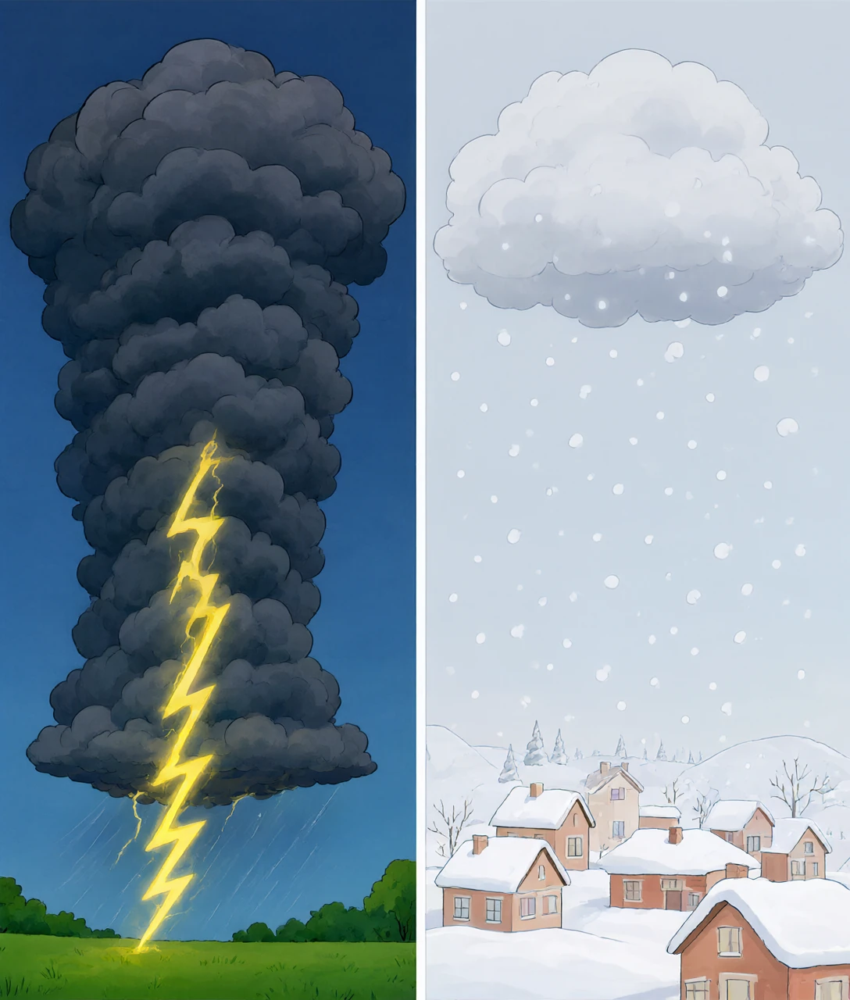
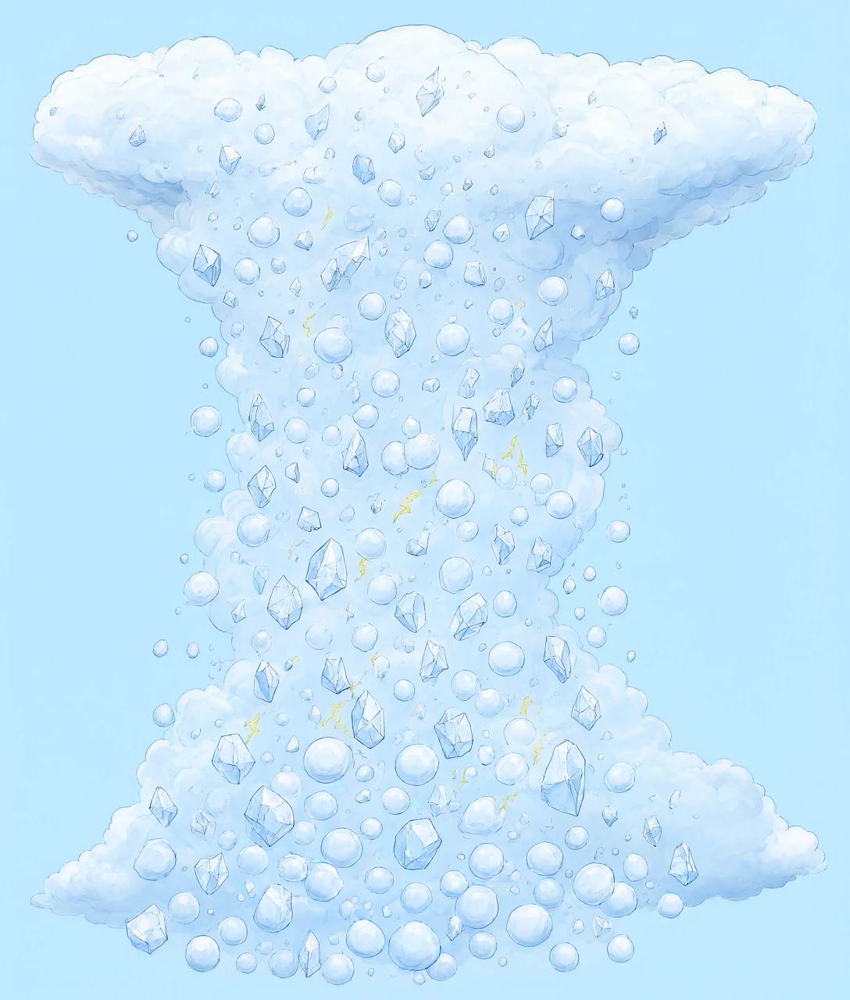
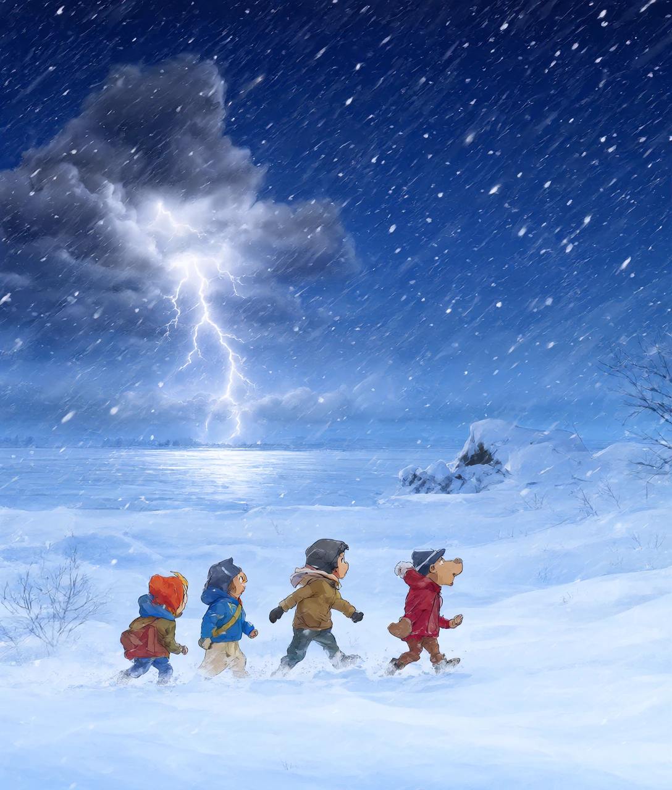

夏天的雷雨轰轰烈烈，冬天的雪却安安静静——原来天上有座「静电工厂」，冬天它放长假
夏天的雷雨天总是特别热闹：乌云压下来，闪电唰地劈亮天空，紧接着雷声轰隆隆滚过屋顶，整栋楼都在抖。
可是到了冬天，雪可以下得铺天盖地，一整夜安安静静，连一声闷响都没有。同样是天上下东西，凭什么夏天的雨带着打雷「配乐」，冬天的雪却像按了静音键？
很多人会说：「冬天冷嘛。」但冷本身不打雷也不阻止打雷——这个答案等于没答。今天我们像拆玩具一样，把「打雷」这件事拆到最底部，看看它到底需要哪几样零件，再对照冬天的天气，一件一件查：到底缺了哪样。
我们看到的雷，其实是两件事：闪电（那道光）和雷声（那声响）。它们是同一个事件的两个结果。
闪电，说白了就是一道巨大无比的电火花。你在干燥的冬天脱毛衣时，「噼啪」一声的小火花、伸手摸门把手被「电」一下的麻感，和闪电是同一种东西——都是电荷攒多了以后，一下子跳过去放电。
区别只在大小：毛衣上的火花几毫米长，闪电能长达好几公里；火花那点能量只够让你麻一下，一道闪电的电流大约有三万安培，相当于几千台电磁炉同时开最大功率。
那雷声是哪来的？这里有个关键因果：空气本来是不导电的，它像一层看不见的墙挡在正负电荷中间。可当电荷攒得足够多，电压高到把这堵「墙」硬生生击穿的一瞬间，电流通过的地方空气被加热到大约三万摄氏度——比太阳表面还热五倍。空气受热剧烈膨胀，「砰」地炸开，这个爆炸声就是雷。
所以「打雷」的最小问题其实是一句话：云里怎么攒得出那么多电？把这个问题的答案拆开，冬天不打雷的原因就会自己浮出来。

云里的电是攒出来的。气象学家研究了很多年，发现这座「静电工厂」开工需要三条原料，缺一条都不行。
原料一：一台大力向上的「电梯」。夏天太阳把地面晒得滚烫，特别是柏油路、晒热的田野，像一块块烧热的铁板。贴着地面的空气被烤热、变轻，就会像断线的热气球一样猛地往上冲——这叫对流。空气上升的速度可以赶上电梯，一分钟冲几百米。
原料二：足够多的水，而且要冻成小冰粒。热空气往上升的时候，里面装的水汽会凝结成水滴；升到很高的地方（几公里以上，温度低于零度），一部分水滴会冻成冰晶，还有一些冻成小冰球，叫霰（xiàn）。这些小冰粒就是发电的「原材料」。
原料三：剧烈的碰撞。上升的电梯不停歇，云里的冰晶和霰粒就被搅得上下乱飞，你撞我、我蹭你，成千上万次地互相摩擦。就像你用气球在头发上蹭很多下会带电一样，撞着撞着，电荷就分了家：轻一点的冰晶带正电，被上升气流一路托到云的顶部；重一点的霰粒带负电，被甩到云的底部。
注意这一步的巧妙之处：光有摩擦还不够，还得有人把正负电荷「分拣」到两头去。做分拣的工人，就是那台上升的电梯——轻的往上抛，重的往下沉。正负电离得越远、攒得越多，中间的「空气墙」就越接近被击穿。终于有一天，云底的负电和地面的正电之间「轰」地击穿空气——闪电落地，雷声炸响。
现在，把三条原料摆在一起：①地面烤热 → 强上升气流；②水汽充足 → 云长得又高又厚，高处结冰；③持续碰撞 → 电荷分拣到位。这三条，夏天的午后全都凑齐，所以夏天的雷雨说来就来。

现在拿着这张「原料清单」去检查冬天的天空，答案就一清二楚了。
先查原料一（强上升气流）：缺。冬天太阳照得斜、白天又短，同样一束阳光摊在更大的地面上，地面积攒的热量大打折扣。地面不烫，贴地的空气就热不起来、跑不动——那台向上的电梯停运了。更麻烦的是，冬天往往是冷空气压在最底下，像盖了一床厚棉被把地面捂住，暖空气就算有也被闷在被子底下，整个大气层安安稳稳。没有电梯，就没有后面的全部剧情。
再查原料二（充足水汽 + 冻结层）：缺一半。空气能「装」多少水汽，跟温度关系极大：温度越低，能装的水汽越少——大约温度每降 10℃，空气的持水能力差不多减半。冬天的空气又冷又干，就算把它的水汽全部拧出来，也拧不出多少。水汽少，云就长得又薄又矮。
最后查原料三（剧烈碰撞）：跟着一块完蛋。没有强上升气流搅拌，云里的冰晶们不会上下乱飞猛撞，只会安安静静地各自漂浮。没有碰撞摩擦，电荷就分不了家；没有分拣，正负电就永远攒不到能击穿空气的程度。工厂停电，自然没有产品。
那雪是从哪来的？雪走的完全是另一条路线，一条不需要任何剧烈运动的温柔路线：水汽在云里遇到一粒微小的灰尘，直接在灰尘上凝成小冰晶（这一步叫凝华，水汽跳过「先变水」直接变冰）；然后空气里多余的水汽分子一个一个、慢悠悠地贴到冰晶上，慢慢长出六个漂亮的瓣。整个过程像在羽毛上一层层粘雪花贴纸，安静得连声音都没有。
所以冬天不打雷、只下雪，不是老天爷换了心情，而是：夏天靠「电梯 + 碰撞」的猛办法发电，冬天只剩「贴纸慢慢粘」的静办法长雪。猛办法需要能量，冬天的太阳给不起。
如果你听得足够仔细，可能会发现一个反例：冬天偶尔真的会响雷，天上下着雪却打闪电，老话管这叫「雷打雪」。这不是迷信，是真实存在的天气现象，气象学里专门有这个词（thundersnow）。
这不是说第三章的道理错了，而是说：有一次机会，静电工厂的三条原料在冬天被临时凑齐了。怎么凑齐的？通常有两种办法。
办法一：暖湿气流强行「踹门」。冬天有时候一股又暖又湿的空气（比如从海洋上跑来的）撞进一大团冷空气里。暖空气比冷空气轻，会被迫沿着冷空气的「斜坡」被迫抬升——相当于没有电梯，但有一只大手把暖空气硬推上去。被推上去的暖湿空气一样会结冰、碰撞、分拣电荷，静电工厂轰然复工，雷就在雪里炸响了。
办法二：大湖当「暖气片」。在北美的五大湖边，冬天湖水比陆地暖和得多。冷风扫过几百公里宽的暖湖面，湖面像烧水的壶口一样咕嘟咕嘟往上冒水汽和热量，气流在湖面上被加热上升——局部的迷你夏天就这么造出来了。这种「湖泊效应雪」威力惊人，能一边下出每小时十厘米的暴雪，一边电闪雷鸣。
雷打雪为什么特别罕见？因为它要求冷得足够狠（能下雪）和暖得足够足（能对流）这对冤家同时出现，还得挨得够近。多数冬天，要么冷得安安静静，要么暖得只下雨。很多气象学家一辈子追着 storms 跑，也没亲眼见过几次雷打雪。
所以更完整的结论是：冬天不打雷，是因为凑不齐三条原料；冬天偶尔打雷，说明有人硬把原料凑齐了——而那往往意味着天气要搞大动作。听到雷打雪，别只顾着惊奇，它经常是强降雪、甚至暴雪的预告。

第一件：雷不是天气的「音效」，它是一座工厂的产品。记住这座工厂的开工口诀：热地面 → 上升电梯 → 冰晶碰撞 → 电荷分家 → 击穿空气。以后看到任何闪电，都可以在心里把这五步默背一遍，看它是从哪一步开始的。
第二件：冬天和夏天的差别，本质是「能量账单」的差别。太阳给夏天的大气疯狂充钱，电梯开足马力；冬天太阳打了个一折，大气只能走「省电模式」。同是降水，一个轰轰烈烈，一个安安静静——钱（能量）不一样，节目单就不一样。这个思路不止用在天气上：看到任何「为什么 A 行 B 不行」，先去查 A 和 B 的能量账单。
第三件：罕见的反例，往往是最值钱的线索。「冬天不打雷」这个规律，被「雷打雪」这个反例捅了个洞——但顺着洞往里看，我们不但没有推翻规律，反而看清了它真正的条件（三条原料）。以后遇到「咦，怎么会这样？」的时刻，别急着说「规律错了」，追进去，你会得到一条更精确的规律。科学家几乎所有的重大发现，都是从死磕反例开始的。
下次下雪的时候，你可以站在窗边做一个小观察：看雪花是直直地飘（稳定，无对流），还是打着旋乱窜（有扰动）；听四周是不是特别安静（雪在吸音）。你会发现，一场安安静静的雪，其实一直在跟你讲述上面这一整个故事。